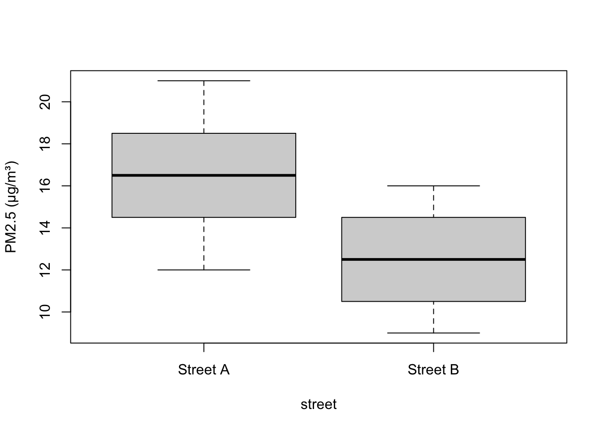

readings <- c(12, 15, 18)
mean(readings)[1] 15This lesson is for Geography with Social Data Science students using R for the first time. You’ll practise opening a monitor export, checking what it contains and making a plot before analysing your own London street measurements.
The first two pages are reproduced from GEOG0186 and refer to its timetable and RStudio setup. The GEOG0191 workflow below uses Positron. Check your GEOG0191 teaching materials for session details.
Open your working folder in Positron with File → Open Folder. Use the session picker to start or select R. Type 2 + 3 in the Console and press Enter. R prints [1] 5.
Create a text file and save it as air-quality.R. Put the code below in the script. To run it, select both lines and press Cmd+Enter on macOS or Ctrl+Enter on Windows/Linux. The Console shows the result.
readings <- c(12, 15, 18)
mean(readings)[1] 15c() combines three values into a vector. The arrow <- saves that vector as readings. The function mean() calculates its average. Keep your code in the script so you can rerun it later.
The practice CSV contains simulated readings from two London street settings. Each row represents a different sampling point. pm25 and pm10 are particulate matter concentrations in µg/m³. The example assumes your monitor records both. Use the measures and units shown in your own export.
The CSV is included with the project. If you’re following the website online, download it and save it in a folder called data inside your working folder.
air <- read.csv("data/london-air-quality-practice.csv")
head(air, 3) site_id street pm25 pm10
1 A01 Street A 14 28
2 A02 Street A 18 32
3 A03 Street A 12 27str(air)'data.frame': 16 obs. of 4 variables:
$ site_id: chr "A01" "A02" "A03" "A04" ...
$ street : chr "Street A" "Street A" "Street A" "Street A" ...
$ pm25 : int 14 18 12 21 16 19 15 17 9 15 ...
$ pm10 : int 28 32 27 35 29 35 34 32 20 29 ...table(air$street)
Street A Street B
8 8 head() previews the first rows. str() shows whether columns are numeric or text. table() counts rows per street. Use View(air) in Positron to open the data in the Data Explorer. If R cannot find the file, run getwd() to check where it is looking.
street_a <- air$pm25[air$street == "Street A"]
summary(street_a) Min. 1st Qu. Median Mean 3rd Qu. Max.
12.00 14.75 16.50 16.50 18.25 21.00 sd(street_a, na.rm = TRUE)[1] 2.878492$ selects a column. Brackets keep the values for rows where the street label matches. summary() shows the minimum, quartiles, median, mean and maximum. The standard deviation from sd() describes spread around the mean in the original units. na.rm = TRUE leaves missing values out of that calculation. Check and report how many readings are missing when you use your own file.
boxplot(pm25 ~ street, data = air, ylab = "PM2.5 (µg/m³)")
The formula pm25 ~ street tells R to plot PM₂.₅ by street. Find the plot under Plots in Positron. The line inside each box marks the median. The box spans the middle half of the readings. Which street has the higher median? How much do the groups overlap?
Keep the raw export and work from a copy. Record the street, sampling point, time, pollutant and units. Check that the concentration column imported as numeric and that zero readings and missing values are distinguishable. If you took several readings at one stop, keep a point or visit identifier so you can account for repeat measurements.
Next, use London Air Quality I to explore two pollutants measured together, then London Air Quality II to compare streets.